1092A10 Crankshaft services PULLEY - R.R.
- Path
- Procedures > 10 ENGINE > 1092 ENGINE COMPONENT MISCELLANEOUS DRIVES > 1092A crankshaft pulley and idle pulleys > 1092A10 Crankshaft services PULLEY - R.R.
- Kind
- repair procedure (removal / refitting; the operation number is the code)
- Applies to
- all engines; all production periods
- Interactive page
- https://sloeber94.github.io/elrnDB-fDbl/en/#/2584320
Applies to: engines: 1.2 8v; all production periods
 Removing
Removing
 Refitting
RefittingPosition the vehicle on a lift.
Op. 4450B04 RIGHT FRONT WHEEL - R.R.
Op. 7055B54 PROTECTION/GUARD UNDER ENGINE - R.R.
Op. 1092B60 ALTERNATOR DRIVE BELT - R + R
1. Undo the bolt (1a) and remove the rpm sensor (1b) from its seat.
2. Undo the fixing bolts (2a) and remove the crankshaft pulley (2b).
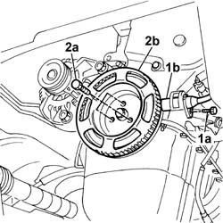
Applies to: engines: 1.2 8v; all production periods
Refitting
RemovingPosition the pulley and tighten the fixing bolts to torque.
Fastening | Component | dia | Value (daNm) | |
|---|---|---|---|---|
- | Bolt | CRANKSHAFT PULLEY | M8 X 1.25 | 2.2 |
Undo the bolt fixing the rpm sensor.
Use a feeler gauge to check that the gap between phonic wheel and sensor is within specified values.
Measurement | Value | ||
|---|---|---|---|
- | Gap (mm) | 0.5 - 1.5 |
Op. 1092B60 ALTERNATOR DRIVE BELT - R + R
Op. 1092B64 ALTERNATOR DRIVE BELT - ADJUST TENSION
Op. 7055B54 PROTECTION/GUARD UNDER ENGINE - R.R.
Op. 4450B04 RIGHT FRONT WHEEL - R.R.
Remove the vehicle from the lift.
Applies to: engines: 1.6 16v; all production periods
Removing
RefittingOp. 4450B04 RIGHT FRONT WHEEL - R.R.
Op. 7055B54 PROTECTION/GUARD UNDER ENGINE - R.R.
Op. 1092B50 ALTERNATOR/WATER PUMP DRIVE BELT - R.R.
1. Undo retaining bolts (1a) and remove flywheel cover (1b).
2. Fit the flywheel retaining tool (2a) and fasten it using the screw (2b).
Description | Code | |
|---|---|---|
2a | Counter-torque | 1.860.680.000 |
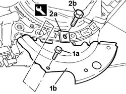
Applies to: engines: 1.6 16v; all production periods
1. Undo the nuts (1a) and remove the crankshaft pulley (1b).
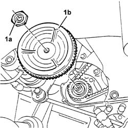
Applies to: engines: 1.6 16v; all production periods
Refitting
RemovingPosition the crankshaft pulley in its housing and secure it tightening the nut to the recommended torque.
Fastening | Component | dia | Value (daNm) | |
|---|---|---|---|---|
- | Nut | CRANKSHAFT PULLEY | M20 | 19 |
Remove the flywheel lock.
Description | Code | |
|---|---|---|
- | Counter-torque | 1.860.680.000 |
Refit the lower flywheel guard and secure it using the bolts.
Op. 1092B50 ALTERNATOR/WATER PUMP DRIVE BELT - R.R.
Op. 1092B54 ALTERNATOR/WATER PUMP DRIVE BELT - ADJUST TENSION
Applies to: engines: 1.3 JTD 16V; all production periods
Removing
RefittingPosition the vehicle on a lift.
Disconnect the negative battery terminal.
Description | Connector | |
|---|---|---|
- | Battery |
1. Disconnect the electrical connection from the air flow meter.
Description | Connector | |
|---|---|---|
1 | Air flow meter |
2. Loosen the collar and disconnect the air intake sleeve to the turbocharger, air flow meter side.
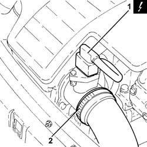
Applies to: engines: 1.3 JTD 16V; all production periods
1. Loosen the band (1a) and disconnect the hose (1b) from the air intake.
2. Remove the air filter (2a) complete with air flow meter (2b) releasing it firstly from the pegs underneath and then from the rear fastening.
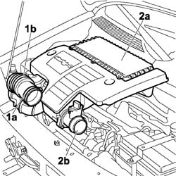
Applies to: engines: 1.3 JTD 16V; all production periods
Carry out operation
Op. 4450B04 RIGHT FRONT WHEEL - R.R.
Carry out operation
Op. 7055B54 PROTECTION/GUARD UNDER ENGINE - R.R.
Carry out operation
Op. 1092C10 POWER STEERING AND/OR SELF-LEVELLING SUSPENSION PUMP DRIVE BELT - R + R
Carry out operation
Op. 1092G10 SINGLE ENGINE BELT - R.R.
1. Prevent the crankshaft from turning using a wrench of appropriate size, unscrew bolts (1a) and remove service pulley (1b).
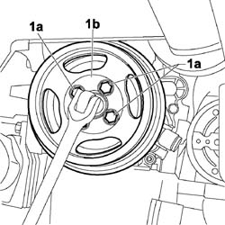
Applies to: engines: 1.3 JTD 16V; all production periods
Refitting
RemovingPosition the crankshaft pulley (1a) and tighten the fixing bolts (1b). Prevent the crankshaft from turning using a wrench of appropriate size and tighten to the specified torque.
Fastening | Component | dia | Value (daNm) | |
|---|---|---|---|---|
1b | Bolt | CRANKSHAFT PULLEY | M8 | (Timing side) 2.3 - 2.8 |
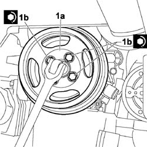
Applies to: engines: 1.3 JTD 16V; all production periods
Carry out operation
Op. 1092G10 SINGLE ENGINE BELT - R.R.
Carry out operation
Op. 1092C10 POWER STEERING AND/OR SELF-LEVELLING SUSPENSION PUMP DRIVE BELT - R + R
Carry out operation
Op. 7055B54 PROTECTION/GUARD UNDER ENGINE - R.R.
Carry out operation
Op. 4450B04 RIGHT FRONT WHEEL - R.R.
Position the air filter in its seat with the air flow meter, secure to the rear fastening and then to the underlying pins.
Connect the flexible sleeve to the air intake on the crossmember and tighten the retaining collar.
Connect the air intake sleeve to the turbocharger, air flow meter side, and tighten the collar.
Connect the electrical connection to the air flow meter.
Description | Connector | |
|---|---|---|
- | Air flow meter |
Connect the negative battery terminal.
Description | Connector | |
|---|---|---|
- | Battery |
Remove the vehicle from the lift.
Applies to: engines: 1.9 DIESEL; all production periods
Removing
RefittingOp. 4450B04 RIGHT FRONT WHEEL - R.R.
Op. 7055B54 PROTECTION/GUARD UNDER ENGINE - R.R.
Op. 1092G10 SINGLE ENGINE BELT - R.R.
1. Undo the retaining bolts.
2. Remove the crankshaft pulley.
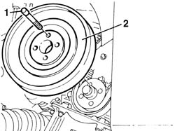
Applies to: engines: 1.9 DIESEL; all production periods
Refitting
RemovingPosition the crankshaft pulley.
Tighten the fixing bolts to torque.
Fastening | Component | dia | Value (daNm) | |
|---|---|---|---|---|
- | Bolt | CRANKSHAFT PULLEY | M8 | 2.5 |
Op. 1092G10 SINGLE ENGINE BELT - R.R.
Applies to: engines: 1.9 JTD 8V; all production periods
Removing
RefittingPosition the vehicle on a lift.
Proceed with the removal
Op. 4450B04 RIGHT FRONT WHEEL - R.R..
Proceed with the removal
Op. 1092G10 SINGLE ENGINE BELT - R.R..
1. Undo the bolts (1a) and remove the lower flywheel guard (1b).
2. Fit the flywheel lock.
Description | Code | |
|---|---|---|
2 | Counter-torque | 1.860.898.000 |
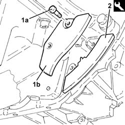
Applies to: engines: 1.9 JTD 8V; all production periods
1. Undo the bolts (1a) and remove the crankshaft pulley (1b).
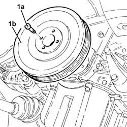
Applies to: engines: 1.9 JTD 8V; all production periods
Refitting
RemovingPosition the crankshaft pulley in its housing and secure it tightening the bolts to the recommended torque.
Fastening | Component | dia | Value (daNm) | |
|---|---|---|---|---|
- | Bolt | CRANKSHAFT PULLEY | M8 | (Timing drive pulley side) 2.3 ÷ 2.8 |
Remove the flywheel lock.
Description | Code | |
|---|---|---|
- | Counter-torque | 1.860.898.000 |
Place the lower flywheel guard in its housing and secure it using the bolts.
Proceed with the refitting
Op. 1092G10 SINGLE ENGINE BELT - R.R..
Proceed with the refitting
Op. 4450B04 RIGHT FRONT WHEEL - R.R..
Remove the vehicle from the lift.
Applies to: engines: 1.4 8v; all production periods
Removing
RefittingPosition the vehicle on a lift.
Proceed with the removal
Op. 4450B04 RIGHT FRONT WHEEL - R.R.
Proceed with the removal
Op. 7055B54 PROTECTION/GUARD UNDER ENGINE - R.R.
Proceed with the removal
Op. 7055B91 RIGHT FRONT WHEEL ARCH LINER - R.R.
Proceed with the removal
Op. 1092C11 POWER STEERING PUMP DRIVE BELT - R.R. FOR VERSIONS WITH AIR CONDITIONER
Proceed with the removal
Op. 1092B40 AIR CONDITIONER COMPRESSOR/ALTERNATOR DRIVE BELT - R + R
1. Undo the bolts (1a) and remove the crankshaft pulley (1b).
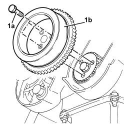
Applies to: engines: 1.4 8v; all production periods
Refitting
Removing1. Position the crankshaft pulley (1a) in its housing and secure it tightening the bolts (1b) to the recommended torque.
Fastening | Component | dia | Value (daNm) | |
|---|---|---|---|---|
1b | Bolt | CRANKSHAFT PULLEY | M8 | 2.3 ÷ 2.8 |
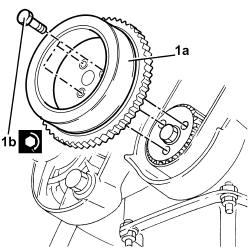
Applies to: engines: 1.4 8v; all production periods
Proceed with the refitting
Op. 1092B40 AIR CONDITIONER COMPRESSOR/ALTERNATOR DRIVE BELT - R + R
Proceed with the refitting
Op. 1092C11 POWER STEERING PUMP DRIVE BELT - R.R. FOR VERSIONS WITH AIR CONDITIONER
Proceed with the refitting
Op. 7055B91 RIGHT FRONT WHEEL ARCH LINER - R.R.
Proceed with the refitting
Op. 7055B54 PROTECTION/GUARD UNDER ENGINE - R.R.
Proceed with the refitting
Op. 4450B04 RIGHT FRONT WHEEL - R.R.
Remove the vehicle from the lift.
Topics linked from this page (13)
- 1092B50 alternator/air conditioner compressor drive belt - adjust tension
- 1092B40 AIR CONDITIONER COMPRESSOR/ALTERNATOR DRIVE BELT - R + R
- 1092B54 alternator/water pump drive belt - adjust tension
- 1092B60 alternator drive belt - r + r
- 1092B64 alternator drive belt - adjust tension
- 1092C10 power steering and/or self-levelling suspension pump drive belt - r + r
- 1092C11 power steering pump drive belt - r r for versions with air conditioner
- 1092G10 single engine belt r r
- 4450B04 right front wheel r r
- 7055B54 under-engine guard - r r
- 7055B91 RIGHT FRONT WHEEL ARCH LINER - R.R.
- A001 BATTERY
- K041 AIR FLOW METER
Topics that link to this page (40)
- Z53 MISFIRE ERROR
- 0510A20 timing gear with belt drive - check - carry out operation with cam cover(s) removed and tappets adjusted
- 0510A30 cam lift - check with cam cover(s) removed
- 1016B20 lh cylinder head extension - replace gasket
- 1016B24 rh cylinder head extension - replace gasket
- 1016C10 cylinder head - r + r and replace gasket
- 1020B10 cover of timing system with chain drive - r + r replace oil seal and gasket
- 1020B30 timing system cover oil seal - replace
- 1020D12 front crank shaft oil seal cover - r + r and replace seals
- 1020D14 front crank shaft oil seal cover - r + r and replace seals for versions with oil pump on crank shaft, timing side
- 1020D18 front crank shaft cover oil seal - replace
- 1028H20 piston with connecting rod - r r
- 1032B10 toothed timing belt - r + r for timing adjustment or replacement
- 1032B14 toothed timing belt - r + r for timing adjustment or replacement versions with air conditioner
- 1032B46 toothed drive pulley - r + r
- 1032B52 toothed driven pulley (one) - r + r
- 1032B60 bolt pulley - r r
- 1032B62 TIMING BELT TOOTHED PULLEY - R.R. FOR VERSIONS WITH AIR CONDITIONING
- 1032A12 CHAIN AND GEARS for timing system - R.R. for timing or Replacement.
- 1032C18 mobile timing system tensioner - r + r for 24 valve engines
- 1032C40 Timing CHAIN TENSIONER PLATE - R.R.
- 1032C43 timing belt tensioner mount - r r with timing belt removed
- 1032D12 timing system protective cover(s) - r + r
- 1032D34 timing system guard assemblies - r + r
- 1032D27 TIMING SYSTEM FRONT PROTECTIVE COVER (LOWER PART) - R.R.
- 1036B10 overhead camshaft - r r on vehicle
- 1036G10 camshaft controlling exhaust valves in top head - r + r with top head removed - includes replacement of top head
- 1036G20 camshaft controlling intake valves in top head - r + r with top head removed - includes replacement of top head if necessary
- 1036C39 PHASE TRANSFORMER ON INLET CAMSHAFT IN CYLINDER HEAD - R.R.
- 1060A20 injection pump - check timing and adjust
- 1060E10 pressure pump - r r
- 1060E30 pressure pump pulley - r r
- 1060G22 cam angle sensor - r r
- 1084B12 engine oil pump - r+r
- 1084B26 emgine oil intake duct - r r
- 1088C10 water pump - r + r
- 1092G14 engine component single belt mobile tensioner - r + r
- 4130B20 power steering pump r r
- 4130B21 power steering pump r r with interfering parts removed
- 5510C50 FLYWHEEL - R.R.